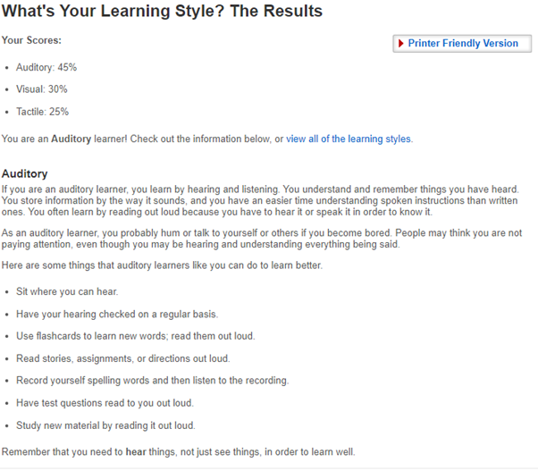

Protagonists (ENFJs) feel called to serve a greater purpose in life. Thoughtful and idealistic, these personality types strive to have a positive impact on other people and the world around them. They rarely shy away from an opportunity to do the right thing, even when doing so is far from easy.
Protagonists are born leaders, which explains why these personalities can be found among many notable politicians, coaches, and teachers. Their passion and charisma allow them to inspire others not just in their careers but in every arena of their lives, including their relationships. Few things bring Protagonists a deeper sense of joy and fulfillment than guiding friends and loved ones to grow into their best selves.
Protagonists tend to be vocal about their values, including authenticity and altruism. When something strikes them as unjust or wrong, they speak up. But they rarely come across as brash or pushy, as their sensitivity and insight guide them to speak in ways that resonate with others.
These personality types have an uncanny ability to pick up on people’s underlying motivations and beliefs. At times, they may not even understand how they come to grasp another person’s mind and heart so quickly. These flashes of insight can make Protagonists incredibly persuasive and inspiring communicators.
Protagonists’ secret weapon is their purity of intent. Generally speaking, they are motivated by a sincere wish to do the right thing rather than a desire to manipulate or have power over other people. Even when they disagree with someone, Protagonists search for common ground. The result is that people with this personality type can communicate with an eloquence and sensitivity that are nearly impossible to ignore – particularly when they speak about matters that are close to their hearts.
When Protagonists care about someone, they want to help solve that person’s problems – sometimes at any cost. The good news is that many people are grateful for Protagonists’ assistance and advice. After all, there’s a reason that these personalities have a reputation for helping others improve their lives.
But getting involved in other people’s problems isn’t always a recipe for success. Protagonists tend to have a clear vision of what people can or should do in order to better themselves, but not everyone is ready to make those changes. If Protagonists push too hard, their loved ones may feel resentful or unfairly judged. And while this personality type is known for being insightful, even the wisest Protagonists may sometimes misread a situation or unwittingly give bad advice.
People with this personality type are devoted altruists, ready to face slings and arrows in order to stand up for the people and ideas that they believe in. This strength of conviction bolsters Protagonists’ innate leadership skills, particularly their ability to guide people to work together in service of the greater good.
But their greatest gift might actually be leading by example. In their day-to-day lives, Protagonists reveal how seemingly ordinary situations can be handled with compassion, dedication, and care. For these personalities, even the smallest daily choices and actions – from how they spend their weekend to what they say to a coworker who is struggling – can become an opportunity to lead the way to a brighter future.

What do the results of these tests mean for you?
After taking the Myers and Briggs personality test it seems to me that I’m a protagonist (ENFJs). I’m thought and idealistic, I leave a positive impact on other people around the world. I choose to do grab the opportunity when trying to do a right thing even when difficult. I’m mostly an auditory learner which means I grasp most of my knowledge through hearing things. The analytical results mean that I’m good at applying logic to solve problems. The questions have key information from complex passages of text, and to find patterns and use them to explain the reasoning behind a particular deduction.
How do you think these results may influence your behaviour in a team?
Protagonists are leaders, my passion and charisma allow me to inspire others not just in their careers but in every arena of their lives, including their relationships. Hearing is a key thing when you would like to contribute to the team, as an auditory learner I would excel in one-on-one conferences, I would prefer to listen to my team members first and guide them in a step-by-step process. These results would make me a potential candidate to draw conclusions from patterns and analyse problems in a unique way, I would be able to contribute by applying logic to solve the problems.
How should you take this into account when forming a team?
Protagonists have an uncanny ability to pick up on people’s underlying motivations and beliefs. These flashes of insight can make Protagonists incredibly persuasive and inspiring communicators. Therefore, as a leader I would step up complete that role for my team when needed to guide us in achieving success. When forming a team, I would be very glad to hear my team-members approach on reaching a task, I would also be very glad to offer my assistance by organising team meetings where we would discuss preferred methods on reaching our goals to accomplish the task.The results I achieved for this test is above average, therefore I would be able to contribute to my team by having a logical approach to a problem and use my individual ability to apply that to complex problems.